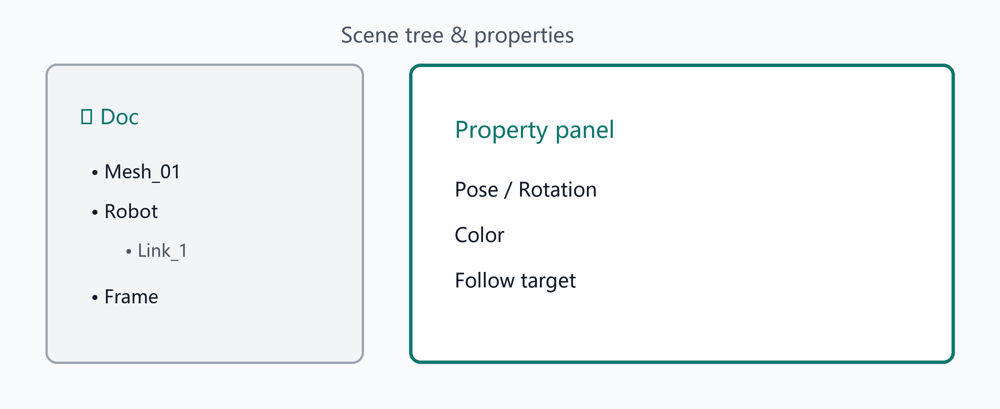

对象树与属性面板
场景树、属性与坐标系
对象树（Units）
- 每个打开的文档对应一个根节点
- 勾选框控制对象在场景中的可见性，并随工程保存
- 选中对象后，右侧属性面板显示位姿、颜色等可编辑字段
属性面板
- 编辑位姿 / 旋转 / 颜色等；数值编辑带防抖，避免拖动时频繁全量重建
- 跟随（Follow）等关系可通过属性绑定父对象
插入坐标系
插入 → 坐标系… 创建命名坐标系对象，用于场景参考或机器人工具/用户坐标系相关操作。
标注
场景中可创建/显示/隐藏标注；与拾取反馈配合，便于记录空间点信息。